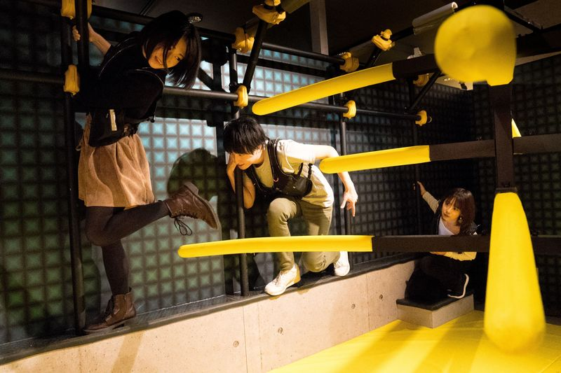
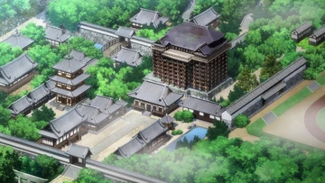
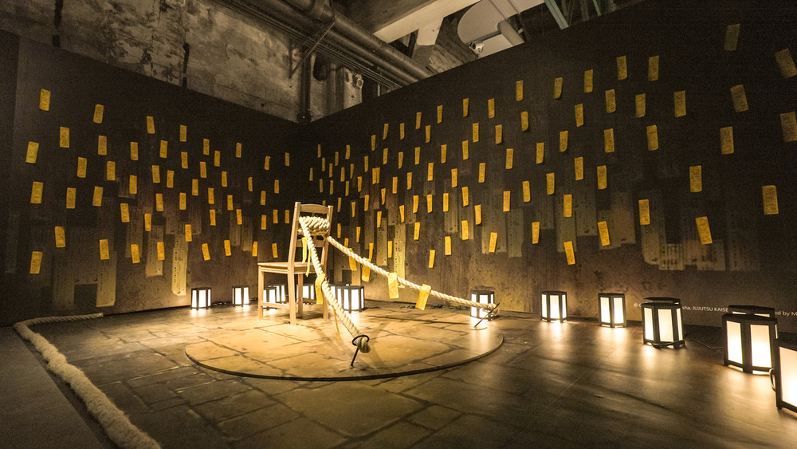

Tour Pháp Sư
Chủ đề: Hiện tại · Phong cách: Phiêu lưu / Khám phá · Loại tour: 2 chiều
Đặt chỗ Xem Tour 1Giới thiệu
Khám phá thế giới hiện đại với các trải nghiệm huyền bí, học kỹ năng chiến thuật cơ bản và tham quan các điểm độc đáo.
Nội dung Tour
Ngày 1 (05/01): Check-in khách sạn hiện đại, khám phá Tokyo, tham quan quán cà phê, cửa hàng đặc sắc.
Ngày 2 (06/01): Tham quan trung tâm huấn luyện – học kỹ năng chiến thuật, phòng thủ, mini-game đội nhóm.
Ngày 3 (07/01): Thám hiểm khu phố bí ẩn – escape room, chụp ảnh với đạo cụ huyền bí.
Ngày 4 (08/01): Tham quan bảo tàng huyền thuật & xem trình diễn kỹ năng.
Điểm nổi bật
- Mini-game chiến thuật & kỹ năng
- Trải nghiệm khu phố bí ẩn
- Xem trình diễn kỹ năng đặc biệt
Thông tin cần lưu ý
- Tour hỗ trợ khứ hồi, di chuyển linh hoạt
- Chuẩn bị trang phục thoải mái
Lịch trình theo ngày



